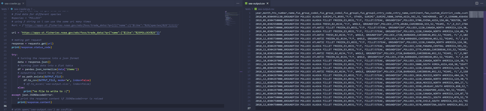

initial test...
I tried to scrape from the NOAA fisheries FOSS data. I successfuly created a CSV file from the request but wasn't able to parse the data due to the format of the CSV file. I believe it was set up as a dictionary, containing a list of further dictionaries. I think I will try another API going forward so I don't waste time by getting stuck on this one.
In this next test I created a new scraper for accessing the Ocean Networks Canada API. The structure of this API's response was a lot more manageable and I figured out how to parse it.
Using this I code I was able to go back and modify my first attempt to find out information about Groundfish Pollock. I was also able to export this information to a CSV file without the formatting errors I had previously experienced. The data was clear and I was able to see what I would be able to extract. I knew that: I wanted numerical values to insert into an equation, and my focus was on deep sea creatures; so for my next scraper I accessed information about underwater objects.
In this program I looked for all the locations in the API which contained the word "underwater". This yielded a lot of information but I decided to focus on the location name, its depth, its latitude and its longitude. You can see that I was able to format the code to extract just the values I needed and then export this information to a separate CSV file.
Here you can see me exporting the API data about underwater locations to a CSV, and then accessing that same CSV within another Python program. This second program was to be used for plotting the data in a three-dimensional space, shown on the plot above. I liked how this was a representation of the numbers I'd spent so long trying to retrieve. I had the idea for the visualiser to contain multiple equation-generated "creatures" that would be situated within this plot.
Since I had decided to use the numerical values from the locations as a plane for the creatures to exist in, I needed another source of numbers to inform the equations the creatures would be generated by. I went with the simplest solution of converting the location names into their ASCII codes; I knew this would give me a long string of values to play with. Here you can see the outcome of the conversions as a list, which I transformed into long strings using ord(), a function which returns the integer a character represents, otherwise known as its ASCII code.
I collected the results in a JavaScript sketch so I could finally start using the numbers to draw things. I used fetch to access the CSV file and created a function that would decode, format, and log the data in the console. It took some further cleaning to get the data to be pure, usable numbers, but eventually it worked. Now having access to the data I need, I can split up the values into smaller integers or floats and perform operations on some equations with them.